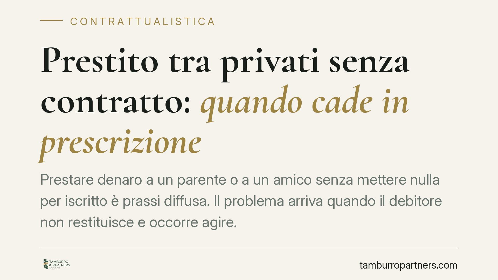

Prestito tra privati senza contratto: quando cade in prescrizione
Prestare denaro a un parente o a un amico senza mettere nulla per iscritto è prassi diffusa. Il problema arriva quando il debitore non restituisce e occorre agire. Il credito non è eterno: si prescrive in dieci anni. Ma senza contratto pesa un'incognita ulteriore, quella della prova. Capire termini e onere probatorio è decisivo per non perdere il diritto.

Il quadro: perché la questione conta
Il prestito tra privati, in diritto si chiama *mutuo* (art. 1813 cod. civ.): è il contratto con cui una parte consegna a un'altra una somma di denaro, con l'obbligo di restituirla. La forma scritta non è richiesta per la validità: un mutuo concluso a voce è pienamente valido.
Il vero nodo è duplice: entro quanto tempo il creditore può chiedere la restituzione e come dimostra, in mancanza di un documento, che quel denaro era un prestito e non una donazione o un pagamento ad altro titolo.
Inquadramento normativo
La restituzione di una somma prestata segue la prescrizione ordinaria decennale prevista dall'art. 2946 cod. civ.: «i diritti si estinguono per prescrizione con il decorso di dieci anni». Trascorso questo termine senza che il creditore abbia agito o interrotto la prescrizione, il debitore può opporre l'estinzione del diritto e rifiutare legittimamente il pagamento.
Non si applica, di regola, la prescrizione breve quinquennale dell'art. 2948 cod. civ., riservata a fattispecie specifiche come gli interessi e le prestazioni periodiche. Se il prestito prevede la corresponsione di interessi, questi ultimi si prescrivono in cinque anni, mentre il capitale resta soggetto al termine decennale.
Il punto delicato è la decorrenza. Se le parti hanno fissato una data di restituzione, il termine parte da quel giorno. Se nulla è stato pattuito, il rimborso è a richiesta: la giurisprudenza di merito (tra gli altri, Trib. Frosinone, Trib. Cassino, Trib. S. Maria Capua Vetere) e la Cassazione collegano l'esigibilità al momento in cui il creditore ha formalmente chiesto la restituzione o, ai sensi dell'art. 1817 cod. civ., alla scadenza del termine eventualmente stabilito dal giudice.
Implicazioni pratiche
Senza contratto scritto, il creditore affronta due ostacoli distinti.
Il primo è la prova del prestito. Un bonifico dimostra il trasferimento del denaro, non la causa: la controparte potrebbe sostenere che si trattava di un regalo o della restituzione di un debito pregresso. La causale del bonifico, i messaggi, gli scambi via chat, le testimonianze diventano quindi elementi centrali. La prova per testimoni del contratto di mutuo incontra però limiti quando la somma supera soglie modeste, ed è ammessa più agevolmente in presenza di un principio di prova scritta.
Il secondo è la gestione del termine. Chi presta denaro a tempo indeterminato non deve credersi al riparo: una richiesta di restituzione tardiva o mai formalizzata rende difficile ricostruire quando il diritto è divenuto esigibile e può favorire l'eccezione di prescrizione.
Per il debitore, invece, l'eccezione di prescrizione va sollevata: il giudice non la rileva d'ufficio. E un pagamento anche parziale, o il riconoscimento del debito, interrompe il termine e lo fa ripartire da capo.
Cosa fare in concreto
- Formalizzate sempre il prestito per iscritto, anche con una semplice scrittura privata che indichi importo, causale, eventuale data di restituzione e interessi. È lo strumento che riduce drasticamente il contenzioso.
- Conservate le tracce documentali: bonifici con causale chiara («prestito a titolo di mutuo»), messaggi, e-mail e ogni comunicazione da cui emerga la natura del rapporto.
- Inviate una richiesta scritta di restituzione tramite raccomandata o PEC. Serve a fissare l'esigibilità del credito e interrompe la prescrizione.
- Monitorate il decorso dei dieci anni dal momento in cui il rimborso è divenuto esigibile e agite prima della scadenza. Se il debitore ha riconosciuto il debito, annotate data e modalità: il termine riparte.
- Verificate le prove disponibili prima di agire in giudizio: consigliamo di valutare con un professionista la solidità del quadro probatorio e la strategia più efficace, per non esporsi a un'azione destinata a fallire.
Un prestito informale non è privo di tutela, ma la sua difesa dipende quasi interamente dalla documentazione. Chi vuole poter chiedere indietro il proprio denaro deve pensarci prima di consegnarlo, non dopo.
Disclaimer
Contributo informativo a cura di Tamburro & Partners - Avv. Giuseppe Tamburro. Non costituisce parere legale.
Ogni contratto ha il suo equilibrio.
Se vuoi una revisione delle clausole o una redazione su misura, scrivi allo studio. Ti rispondiamo entro un giorno lavorativo.